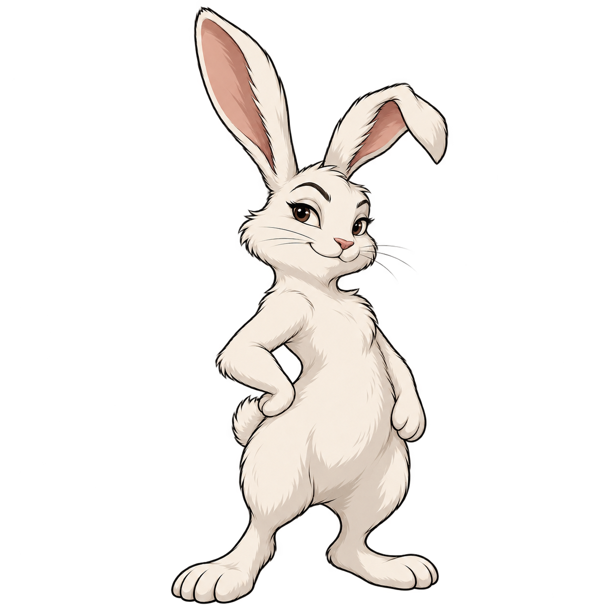

Quel lapin suivras-tu ?
3 façons de dessiner ton complice, 4 apparences et 5 plateaux à associer dans une même scène.
Comparatif visuel local. Les réactions sont simulées et ton choix reste modifiable.
Même position d’italienne et mêmes pièces que dans XChess. Le cadre se dessine autour des 64 cases.

À 64 pxTaille réelle, hors aperçu réduit
Mesure du plateau en cours…
Les 12 propositions
Une oreille pliée et 4 apparences pour chaque direction.
Les variantes 3D habillées et Crépuscule pixel présentent encore des écarts de visage et de silhouette, à harmoniser sur la référence choisie.